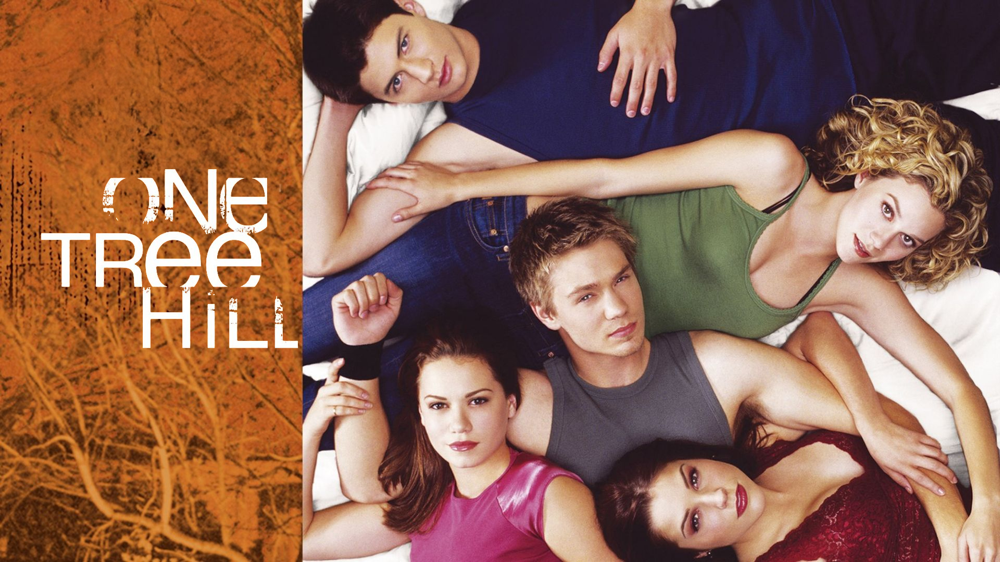
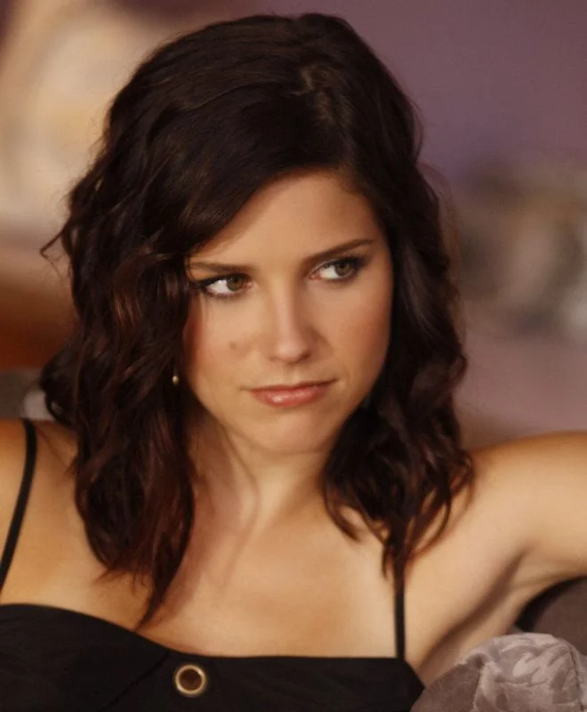
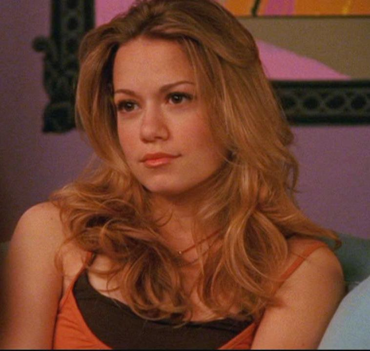

One Tree Hill é uma série de drama norte-americana, transmitida entre 2003 e 2012, que conta a vida de dois meio-irmãos, Lucas e Nathan Scott, que vivem na cidade fictícia de Tree Hill, situada na Carolina do Norte. Apesar de partilharem o mesmo pai, os jovens cresceram em realidades muito diferentes e partilham uma forte rivalidade, intensificada pela competição na equipa de basquetebol da escola. Com o passar do tempo, a narrativa acompanha a transformação do conflito entre ambos e aborda temas como a família, a amizade, os relacionamentos e a transição para a vida adulta.

Em baixo podes ver uma foto de cada uma:
É a capitã das "cheerleaders" dos Ravens e mais tarde, fundadora da marca de moda "Clothes Over Bro's". Conhecida pelo seu carisma, sentido de humor e forte lealdade, destaca-se como uma das personagens com maior crescimento pessoal ao longo da série, evoluindo de uma adolescente rebelde para uma empresária de sucesso e mãe dedicada.

É uma aluna exemplar e apaixonada por música, destaca-se pela sua maturidade, gentileza e determinação. A sua história com o Nathan torna-se uma das grandes referências da série, mostrando a sua capacidade de apoiar quem ama sem abdicar dos seus próprios sonhos.

Inicia a série como o rapaz arrogante e estrela da equipa de basquetebol dos Ravens, mas passa por uma das maiores transformações de One Tree Hill. Ao apaixonar-se pela Haley e ao lidar com os seus problemas familiares, torna-se um homem responsável, dedicado à família e focado em alcançar o seu sonho de jogar na NBA.
Obrigada por consultares o meu site!